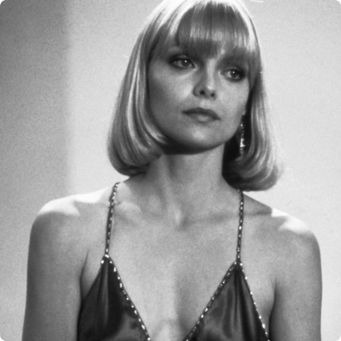
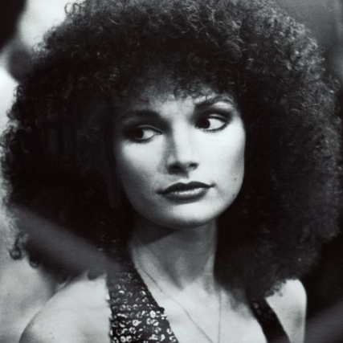
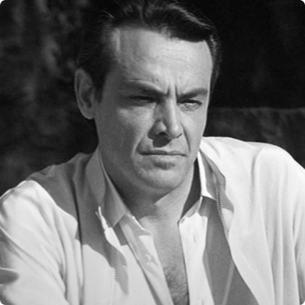

Al Pacino in versione Tony Montana catalizza l’attenzione per l’intera durata del film ed è uno dei primi attori che vengo in mente quando si fa riferimento al genere gangster.
All’interno di questa pagina troverai ulteriori informazioni sul cast e sui personaggi principali di Scarface.
Scopri di chi sono i volti rimasti impressi nella memoria di migliaia di persone.
Alfredo James Pacino, detto Al, interpreta Tony Montana, l’iconico narcotrafficante protagonista del film.
Nato a New York il 25 aprile 1940, la sua carriera da attore lo ha portato a vestire più volte e sempre con successo i panni di un malavitoso.
Il ruolo gli sembra cucito addosso, forse anche a causa delle sue origini parzialmente italiane.
Le sue indimenticabili performance gli hanno permesso di essere nominato nove volte al premio Oscar, di vincerne uno nel 1993 e di essere considerato
fra i migliori attori di sempre.

Michelle Pfeiffer
ELVIRA HANCOCK
Michelle Marie Pfeiffer, interpreta Elvira, la moglie del vecchio boss Frank Lopez prima e del vulcanico Tony poi.
Nata a Santa Ana, in California, il 29 aprile 1958, raggiunge la fama internazionale proprio grazie al suo ruolo in Scarface.
Il suo personaggio risalta per l’accostamento di una bellezza fuori dal comune con una trasandatezza velata che emana piattezza ed apatia.
L’attrice è stata nominata una volta al premio Oscar come miglior attrice protagonista. ed ha vinto un Golden Globe, un Premio BAFTA e un Orso d'argento.
Steven Bauer
MANOLO "MANNY" RIBERA
Esteban Ernesto Echevarría Samson, conosciuto con il nome d’arte Steven Bauer, veste i panni di Manny Ribera, il fido amico e socio in affari
che affianca Tony nel corso di tutta la sua avventura.
Nato a L'Avana il 2 dicembre 1956, l’attore cubano naturalizzato statunitense arriva a toccare con Scarface il punto più alto della sua carriera.
ATTORI SECONDARI

Mary Elizabeth Mastrantonio
GINA MONTANA
Mary Elizabeth Mastrantonio interpreta Gina Montana, sorella minore di Tony e amante del suo braccio destro Manny Ribera.
Nata a Lombard il 19 novembre 1958 da una famiglia di origine italiana, ha conseguito una laurea presso l'Università dell'Illinois.
È stata candidata all'Oscar alla miglior attrice non protagonista e al Tony Award una volta.
Robert Loggia
FRANK LOPEZ
Robert Loggia interpreta Frank Lopez, il capo dell’associazione di narcotraffico in cui Tony inizia a muovere i primi passi ed il primo compagno di Elvira.
Nato a New York il 3 gennaio 1930, ha recitato in numerose serie televisive per il piccolo schermo ed è stato candidato una volta all'Oscar al miglior attore non protagonista.

Paul Shenar
ALEJANDRO SOSA
Albert Paul Shenar veste i panni di Alejandro Sosa, il malavitoso con cui Tony entrerà in affari durante il suo graduale percorso di avvicendamento da Lopez.
Nato a Milwaukee, 12 febbraio 1936 è conosciuto principalmente per la sua parte in Scarface.